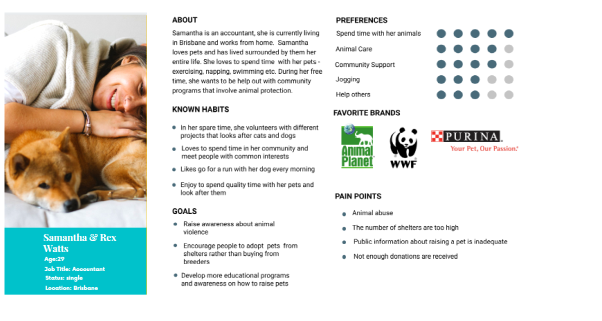

Case Study
Australian Pet Welfare Foundation was designed to be a powerful platform to promote changes in policy and legislation to reduce animal euthanasia. We have observed that the current website design is not meeting this goal because of a lack of trust in the website leading to poor support for animals. How might we design the website in such a way that the present information helps users to connect with the organization to promote user retention.
| Role | UX designer User Research, Interaction, Visual design, Prototyping & Testing |
|---|---|
| Tools | Figma , Miro, Invision, Illustrator, Trello |
We conducted a research interview with 5 users and a survey, to find any pain points that users were experiencing with the actual website.
Based on the research results we started creating a serie of sketches with the features that potential customers need and want to see in the website
We tested the first prototype we created, in order to detect from user, pain points or positive feedbacks for our first attempt.
The user research revealed that people were not willing support the cause because the website did not look professional or trustworthy. This was due to an outdated design and glitches in the current website, including poor organisation of the website content leading to the user feeling overwhelmed and detached to the cause.
Therefore, we believe that if the information on the website is organized in a more accessible manner with a focus on a more visually appealing design it might be able to help people feel connected to the cause.
We might do this by re-designing the information architecture of the website with a focus on the navigation and the user content. We may also choose to test a warmer colour palette for the website to make it feel more welcoming. Doing this will allow our users to easily access important information on the website leading to more people supporting the cause
Based on the user reseach, we set up our user persona, and identified realistic goals anf frustations the user might have when using the website
